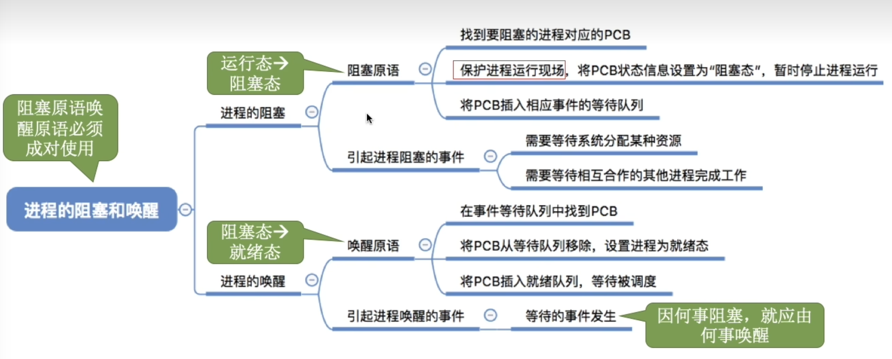
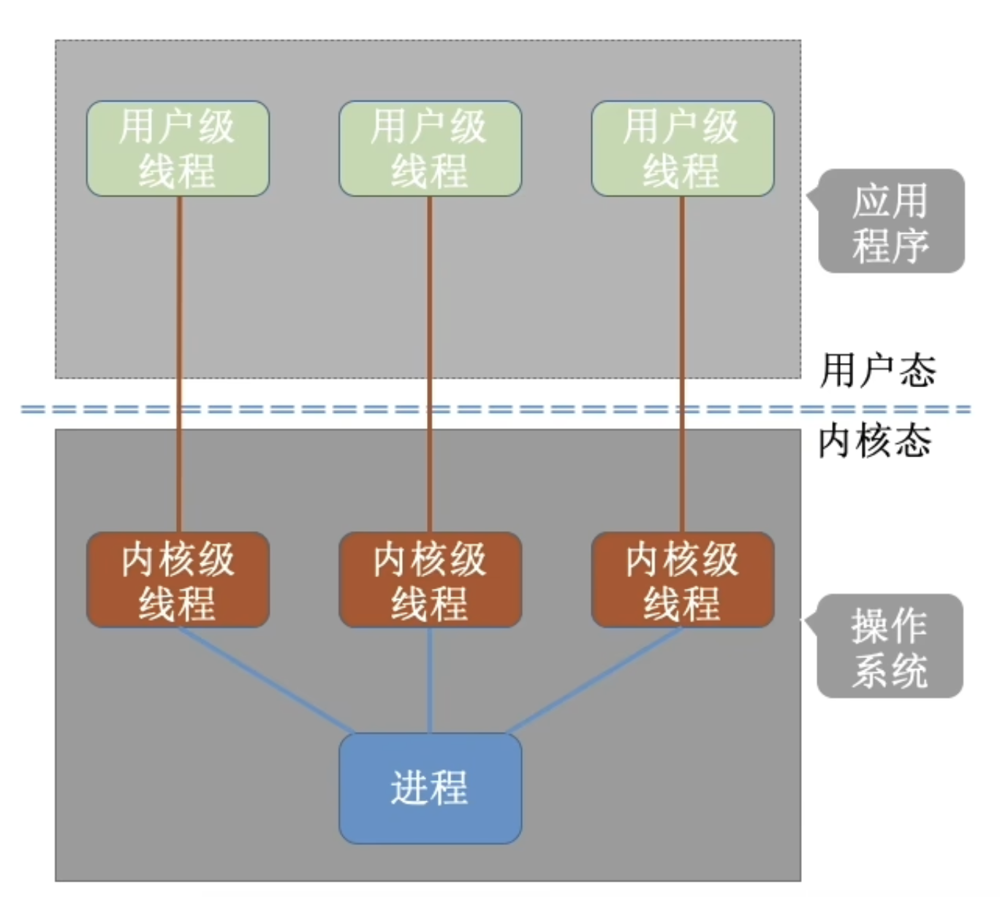

目录
进程与线程
- 进程与线程的基本概念：进程/线程的状态与转换
- 线程的实现：内核支持的线程，线程库支持的线程
- 进程与线程的组织与控制
- 进程间通信：共享内存，消息传递，管道
CPU调度与上下文切换
- 调度的基本概念：调度的目标
- 调度的实现：调度器/调度程序（schedule），调度的时机与调度方式（抢占式/非抢占式），闲逛进程，内核级线程与用户级线程调度
- 典型调度算法：先来先服务调度算法；短作业（短进程、短线程）优先调度算法，时间片轮转调度算法，优先级调度算法，高响应比优先级调度算法，多级队列调度算法，多级反馈队列调度算法
- 上下文及其切换机制
同步与互斥
- 同步与互斥的基本概念
- 基本的实现方法：软件方法；硬件方法
- 锁：信号量；条件变量
- 经典同步问题：生产者-消费者问题，读者-写者问题；哲学家进餐问题
死锁
- 死锁的基本概念；死锁预防
- 死锁避免；死锁检测和解除
进程与线程
进程的概念与特征
进程的状态与转换
进程状态的转换
进程的状态

进程的组织
进程的组织分为两种方式，其一是链接方式，也就是链表。还有一种是索引方式，也就是哈希表。不过大多数操作系统都用的是链表方式
进程控制
进程的创建

进程的终止

进程的阻塞与唤醒

进程的切换
进程通信
线程和多线程模型
引入线程机制后，有什么变化？
线程的属性
- 线程是处理机调度的单位
- 多CPU计算机中，各个线程可占用不同的CPU
- 每个线程都有一个线程ID、线程控制块（TCB）
- 线程也有就绪、阻塞、运行三种基本状态
- 线程几乎不拥有系统资源
- 同一进程的不同线程间共享进程的资源
- 由于共享内存地址空间，同一进程中的线程间通信甚至无需系统干预
- 同一进程中的线程切换，不会引起进程切换
- 不同进程中的线程切换，会引起进程切换
- 切换同进程内的线程，系统开销很小
- 切换进程，系统开销大
线程的实现方式
用户级线程（User-Level Thread, ULT）
线程的管理工作有谁来完成？
用户级线程由应用程序通过线程库实现，所有的线程管理工作都由应用程序负责（包括线程切换）
线程的切换是否需要CPU变态？
用户级线程中，线程切换可以在用户态下即可完成，无需操作系统干预
操作系统是否能意识到用户级线程的存在？
在用户看来，是有多个线程。但是操作系统内核看来，并意识不到线程的存在。“用户级线程”就是“从用户视角看能看到的线程”
这种线程的实现方式有什么优点和缺点？
优点：用户级线程的切换在用户空间即可完成，不需要切换到内核态，线程管理的系统开销小，效率高
缺点：当一个用户级线程被阻塞后，整个进程都会被阻塞，并发度不高。多个线程不可在多核处理机上并行运行。
内核级线程（Kernel-Level Thread, KLT）

线程的管理工作由谁来完成？
内核级线程的管理工作由操作系统内核完成
线程的切换是否需要CPU变态？
线程调度、切换等工作都由内核负责，因此内核级线程的切换必然需要核心态下才能完成。
操作系统是否能意识到内核级线程的存在？
操作系统会为内个内核级线程创建相应的TCB（Thread Control Block，线程控制块），通过TCB对线程进行管理。“内核级线程”就是“从操作系统内视角看能看到的线程”
这种线程的实现方式有什么优点和缺点？
优点：当一个线性被阻塞后，别的线程还可以继续执行，并发能力强。多线程可在内核处理机上并行运行。
缺点：一个用户进程会占用多个内核级线程，线程切换由操作系统内核完成，需要切换到核心态，因此线程管理的成本高，开销大。
多线程模型
一对一模型

一对一模型：一个用户级线程映射到一个内核级线程。每个用户进程有与用户级线程同数量的内核级线程。
优点：当一个线程被阻塞后，别的线程还可以继续执行，并发能力强。多线程可在多核处理机上并行运行。
缺点：一个用户进程会占用多个内核级线程，线程切换由操作系统内核完成，需要切换核心态，因此线程管理的成本高，开销大。
多对一模型

多对一模型：多个用户级线程映射到一个内核级线程。且一个进程只被分配一个内核级线程。
优点：用户级线程的切换在用户空间即可完成，不需要切换到核心态（而是通过用户库），线程管理的系统开销小，效率高
缺点：当一个用户级线程被阻塞后，整个进程都会被阻塞，并发度不高。多个线程不可在多核处理机上并行运行
多对多模型
多对多模型：n个用户级线程映射到m个内核级线程（n >= m）。每个用户进程对应m个内核级线程。
克服了多对一模型并发度不高的缺点（一个阻塞全体阻塞），又克服了一对一模型中一个用户进程占用太多内核级线程，开销太大的缺点。
内核级线程中可以运行任意一个有映射关系的用户级线程代码，只有两个内核级线程中正在运行的代码逻辑都阻塞时，这个进程才会阻塞